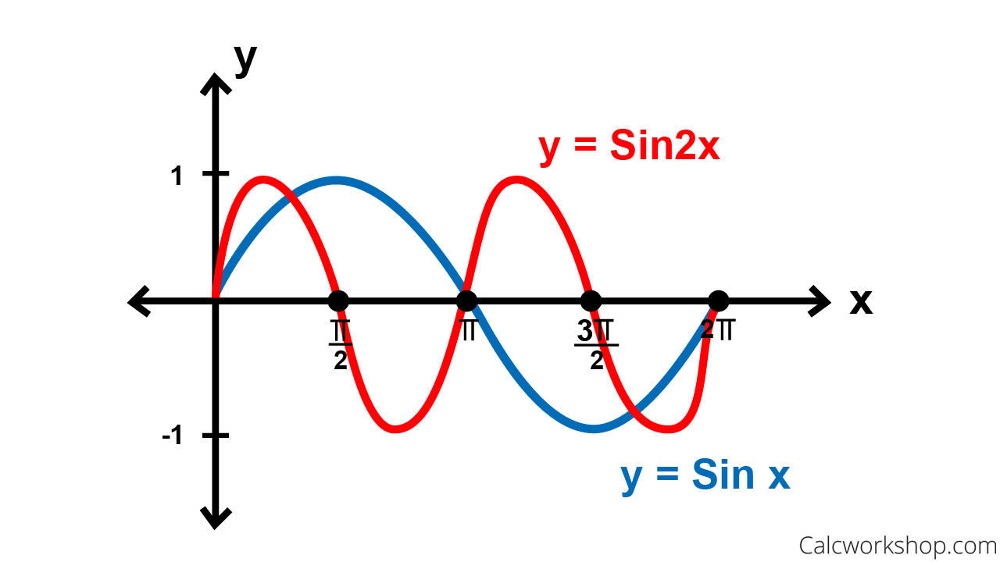

1501 Lab 11
Online textbook:
bookshelf.vitalsource.com
iOLab for Scientists and Engineers
Lab 10: Standing Waves
Brightspace Addendum
You will need:
IOLab device (+ spring attachments)
Leftover comments from Lab 10
How to verify theory
Make prediction, then verify
Fit to a line
Predict constants of fit, verify with known values
Match data to equation
Doesn't have any predictive power
Other errors
Freq of $F(t)$ is 2x that of pendulum
$l = \mathrm{(length\,of\,string)} + r_{\mathrm{cm}}$
Angles must be small
Conclusion
$T = 2\pi \sqrt{\frac{l}{g}}$ is a lie (sort of)
It is only an approximation
Expect disagreement at large angles
It is okay to disagree with theory!
Other
Lies
Half Truths
$F = \mu N$
$F \approx mg \longrightarrow F \approx \frac{Gm_1m_2}{r^2}$
$p = mv$
$E = mc^2$
Poll

Lab 11: Standing Waves
https://phet.colorado.edu/sims/html/wave-on-a-string/latest/wave-on-a-string_en.html
iOLab microphone
To do:
Complete Brightspace version
Use online textbook for help
No need for write-up. List answers in .doc .pdf .txt
My answer
⋮
My last answer